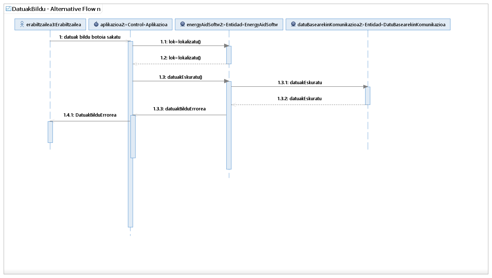

Visión general
Principio
Paquete
Elemento
Documentación UML de DatuakBildu
Modelo de análisis RUP::DatuakBildu::DatuakBildu::DatuakBildu - Alternative Flow n::DatuakBildu - Alternative Flow n
Diagrama DatuakBildu - Alternative Flow n

Propiedades:
Ver
Nombre
DatuakBildu - Alternative Flow n
Tipo
Sequence Diagrama
Visión general
Principio
Paquete
Elemento
Documentación UML de DatuakBildu